- 1. 개요
- 2. 상세
- 2.1. 이름의 진짜 유래 (공식 입장)
- 2.2. 우연이 만들어낸 억울한(?) 오해
- 3. 단지 공통 특징
- 4. 아쿠아 아파트 전수조사 목록 (총 26개)
- 5. 여담
1. 개요
- 효빈도시공사 아쿠아 브랜드 해명 보도자료 중 발췌
효빈광역시 전역 및 탄성군 일대에 흩어져 있는 '아쿠아(Aqua)'라는 이름이 들어간 아파트 단지들을 통틀어 이르는 말. 원래는 효빈광역시가 3면이 바다에 접해 있고 수자원이 풍부하다는 점을 기념하기 위해 야심 차게 런칭한 친환경 수변 아파트 브랜드였으나, 기막힌 지명들과의 우연의 일치가 겹치며 졸지에 특정 스쿨 아이돌 그룹의 거대한 부동산 카르텔로 오해받고 있는 비운의 26개 단지를 뜻한다.
2. 상세
2.1. 이름의 진짜 유래 (공식 입장)
효빈시와 도시공사의 기획 의도에 따르면, '아쿠아(Aqua)'라는 브랜드 네임은 효빈광역시가 3면이 바다와 접해 있고 수자원이 압도적으로 풍부한 해양 도시라는 지리적 특성에서 착안한 것이다. 맑고 깨끗한 물의 도시라는 정체성을 듬뿍 담아, 입주민들에게 아름답고 청정한 주거 환경을 제공하겠다는 지극히 예쁘고 순수한 의도로 명명되었다.
또한, 아쿠아 아파트가 지어진 동네들의 기묘한 이름 역시 효빈시의 역사에 뿌리를 둔 고유한 자연 지명일 뿐이다. 가장 큰 오해를 사는 탄성군 흑택면 루비리(黑澤面 淚沸里)의 경우, 검은 연못(흑택) 근처에 눈물이 끓어오르는 듯한 맑은 온천수(루비)가 솟아난다는 뜻의 유서 깊고 아름다운 향토 지명이다. 과진동 역시 과거 나루터가 있던 지명이며, 우전동은 소가 밭을 가는 형태의 지형에서 따온 자연 지명에 불과하다.
2.2. 우연이 만들어낸 억울한(?) 오해
문제는 효빈시의 해양 수변 도시 콘셉트(바다)와, 하필 건설 부지로 선정된 자연 지명들(흑택, 루비 등), 그리고 온화한 기후를 살린 아파트 조경 사업 등이 환상적인 시너지를 일으키며 "이건 누가 봐도 러브라이브! 선샤인!!의 아쿠아(Aqours) 헌정 아파트다!"라는 전 국민적인 오해를 낳고 말았다는 점이다. 하필 검은 연못 옆 동네 이름이 루비리인 게 말이 되냐고
처음에는 그저 신기한 우연의 일치였으나, 이를 흥미롭게 여긴 전국의 럽라이버들이 효빈시로 성지순례를 오고 심지어 청약을 넣고 입주하기 시작하면서 현재는 아파트 연합회 자체가 진짜 아쿠아 카르텔(...)로 동화되어 버린 안타까운(?) 상태다.
3. 단지 공통 특징
효빈도시공사는 아래의 특징들이 모두 수변 도시의 정체성을 살리기 위한 '순수한 우연'이라고 해명하고 있다.
- 수변 조경 필수: 이름이 아쿠아인 만큼, 단지 내에 반드시 바다를 연상케 하는 거대한 인공 폭포나 수경 시설이 마련되어 있다. (물의 도시 효빈을 상징하는 디자인일 뿐이라고 한다.)
- 풍토에 맞춘 귤나무 식재: 조경수로 소나무나 벚나무 대신 남부 지방에서나 자랄 법한 귤나무가 대거 심어져 있다. 효빈시의 온화한 해양성 기후를 증명하기 위한 농업 프로젝트의 일환이라고 해명했지만, 겨울철 동사 방지를 위해 입주민들이 귤나무에 주황색 패딩을 입혀주는 진풍경이 벌어진다. 치카 오시 시장님의 사심이 절대 아니라고 한다.
- 엘리베이터 안내 방송: 단지 내 엘리베이터가 열릴 때 "캉~ 캉~" 하는 특정 오프닝 효과음이 들린다는 민원이 잦다. (승강기 제조사의 기본 알림음 중 하나가 우연히 비슷하게 들릴 뿐이라는 공식 해명이 있었다.)
4. 아쿠아 아파트 전수조사 목록 (총 26개)
효빈광역시 시설물 대장에 등록된 26개의 아쿠아 아파트 단지 전체 목록이다. 100% 자연 지명과 친환경 브랜드의 결합체이다.
| 시/도 및 구/군 | 아파트 명칭 | 분류 | 소재지 (자연 지명) |
|---|---|---|---|
| 남구 | 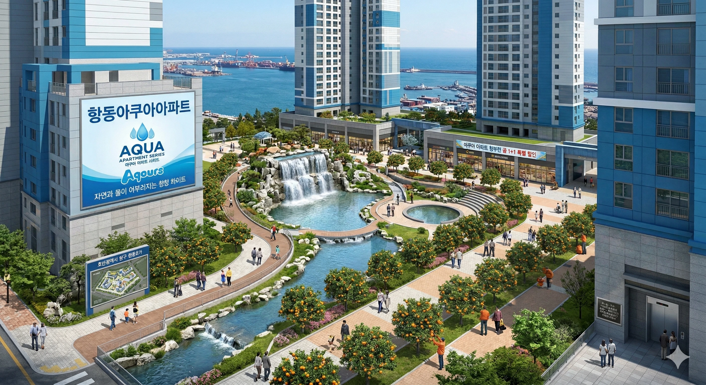 항동아쿠아아파트 |
일반 시설/마커 | 효빈광역시 남구 항2동(항동2가) |
| 동구 | 일반 시설/마커 | 효빈광역시 동구 사가당1동(사가당동) | |
| 북구 | 일반 시설/마커 | 효빈광역시 북구 고송1동(고송동) | |
| 서구 | 일반 시설/마커 | 효빈광역시 서구 과진6동(과진동) | |
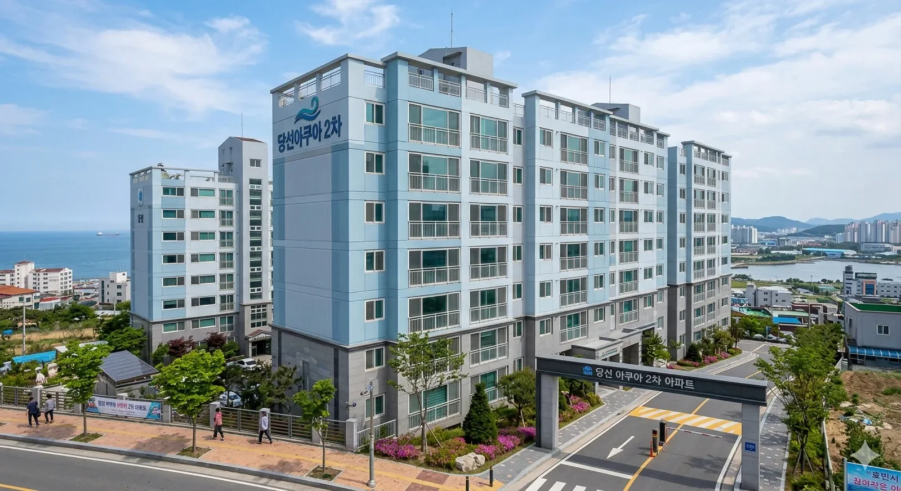 과진아쿠아2차 |
일반 시설/마커 | 효빈광역시 서구 과진6동(과진동) | |
| 일반 시설/마커 | 효빈광역시 서구 당선3동(당선동) | ||
| 일반 시설/마커 | 효빈광역시 서구 당선3동(당선동) | ||
| 일반 시설/마커 | 효빈광역시 서구 당선3동(당선동) | ||
| 안천구 | 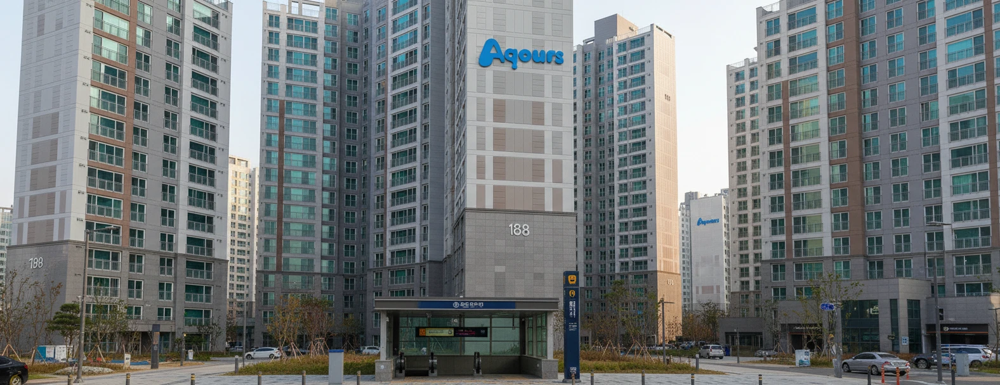 당가아쿠아아파트 |
일반 시설/마커 | 효빈광역시 안천구 당가2동(당가동) |
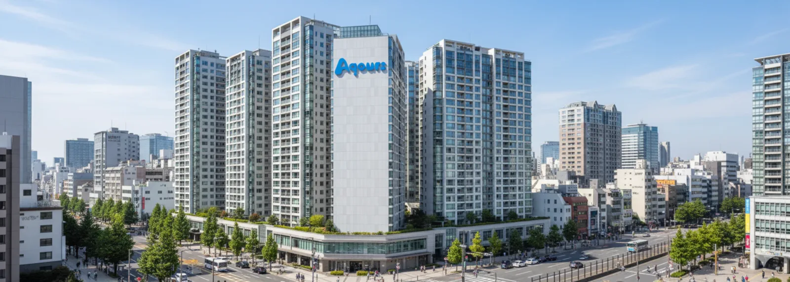 이자아쿠아아파트 |
일반 시설/마커 | 효빈광역시 안천구 이자2동(이자동) | |
| 중구 | 일반 시설/마커 | 효빈광역시 중구 중정동(오석동) | |
| 창전구 | 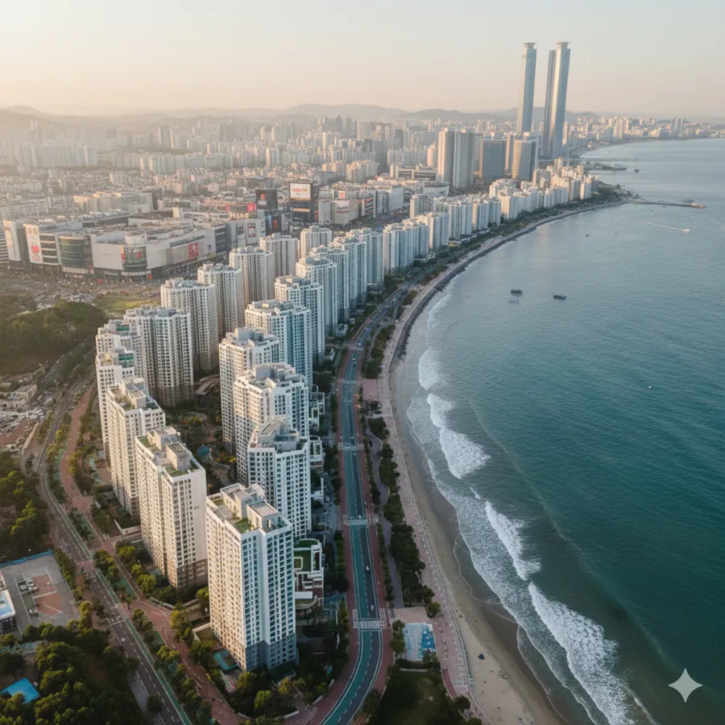 창전아쿠아1단지 |
일반 시설/마커 | 효빈광역시 창전구 창전2동(창전동) |
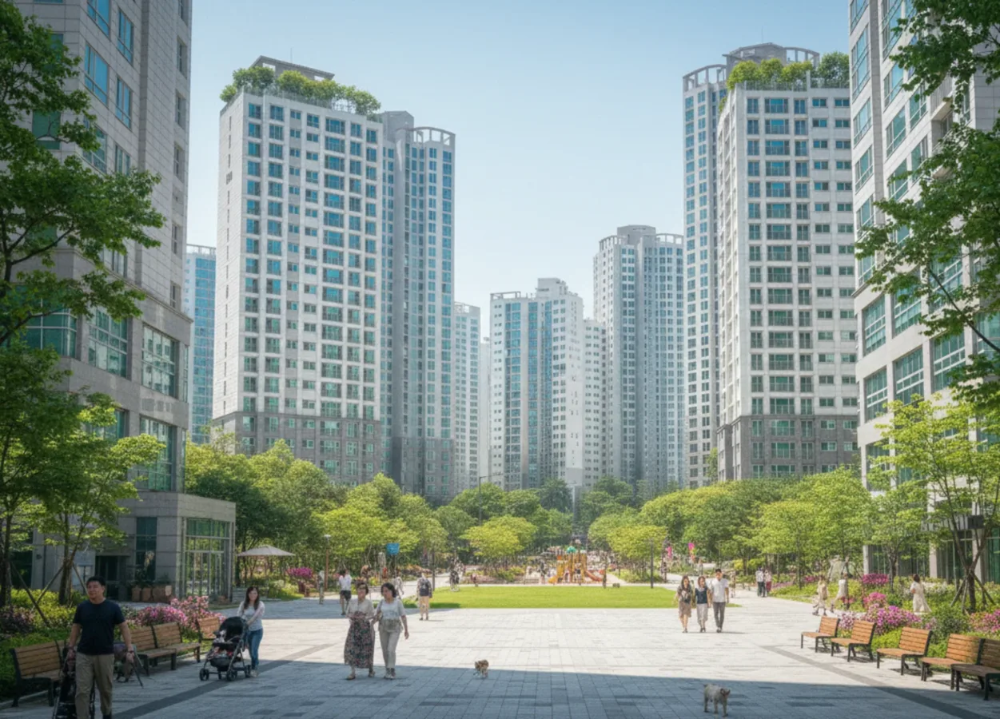 창전아쿠아2단지 |
일반 시설/마커 | 효빈광역시 창전구 창전4동(창전동) | |
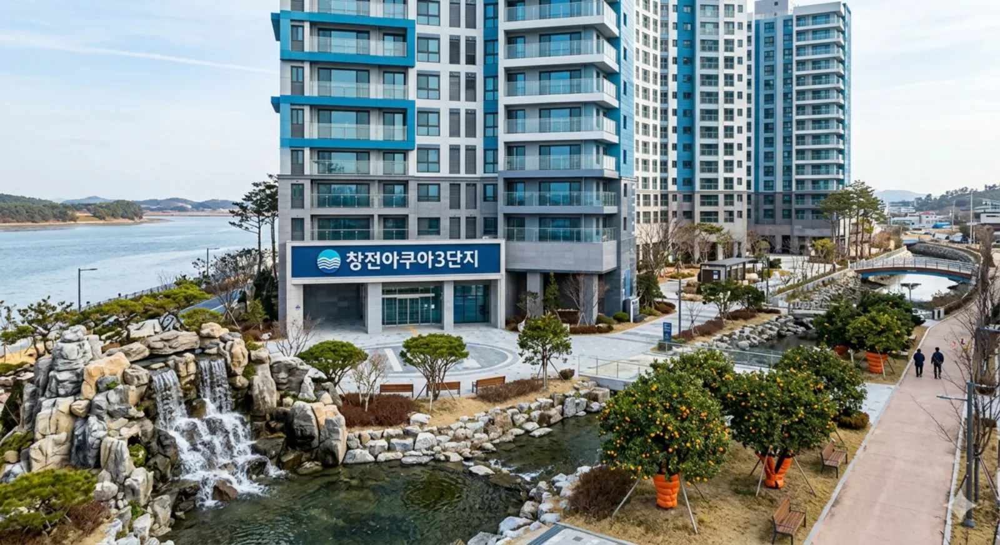 창전아쿠아3단지 |
일반 시설/마커 | 효빈광역시 창전구 창전4동(창전동) | |
| 청엽구 | 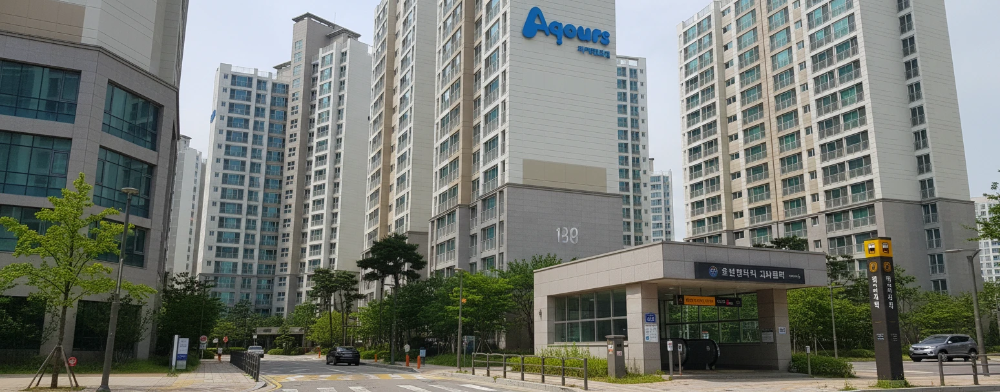 동리아쿠아아파트 |
일반 시설/마커 | 효빈광역시 청엽구 동리동 |
| 일반 시설/마커 | 효빈광역시 청엽구 등동 | ||
| 일반 시설/마커 | 효빈광역시 청엽구 우전2동(우전동) | ||
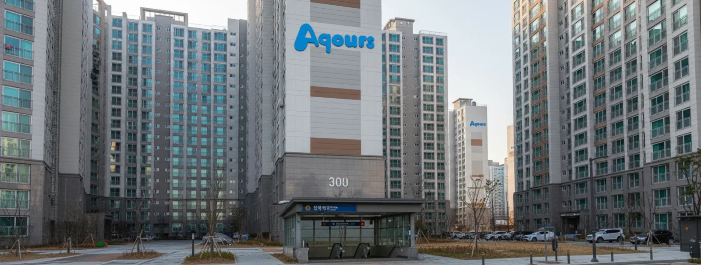 청엽 아쿠아 2차 |
일반 시설/마커 | 효빈광역시 청엽구 청엽1동(청엽동) | |
| 일반 시설/마커 | 효빈광역시 청엽구 청엽1동(청엽동) | ||
| 청엽아쿠아2차 | 일반 시설/마커 | 효빈광역시 청엽구 청엽1동(청엽동) | |
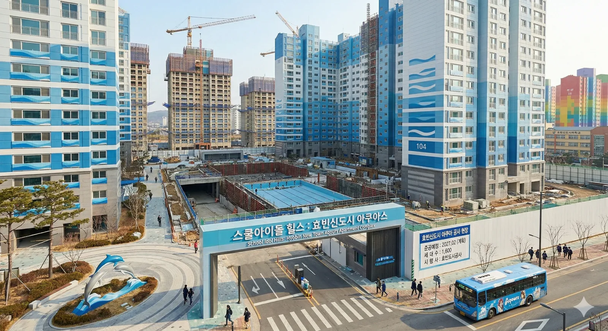 효빈동신도시아쿠아아파트 |
일반 시설/마커 | 효빈광역시 청엽구(효빈동1가) | |
| 탄성군 | 일반 시설/마커 | 효빈광역시 탄성군 도변읍 도변리 | |
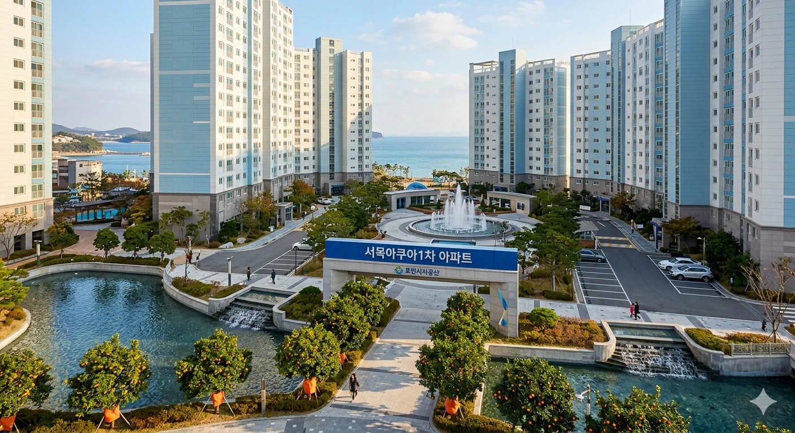 서목아쿠아1차아파트 |
일반 시설/마커 | 효빈광역시 탄성군 서목읍 서목리 | |
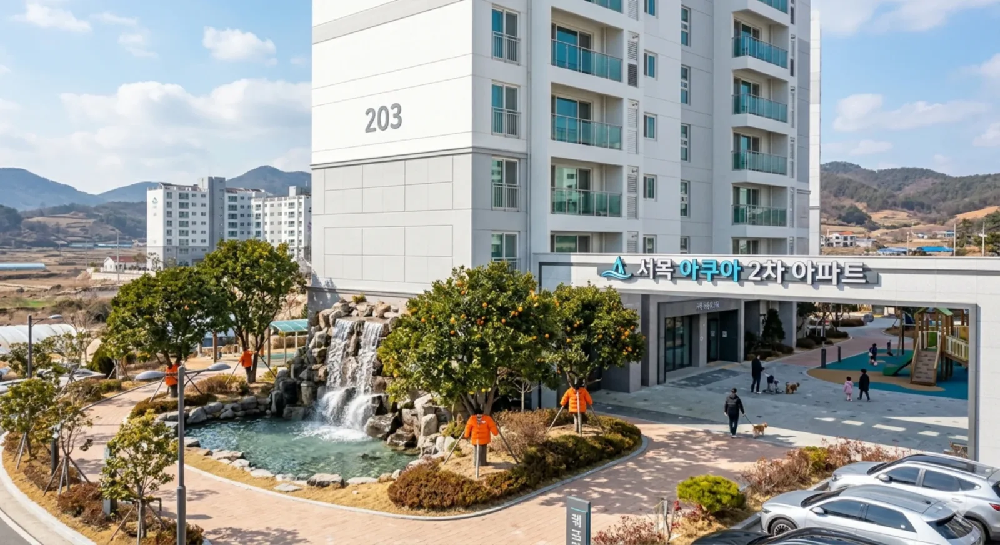 서목아쿠아2차아파트 |
일반 시설/마커 | 효빈광역시 탄성군 서목읍 서목리 | |
| 일반 시설/마커 | 효빈광역시 탄성군 탄성읍 탄성리 | ||
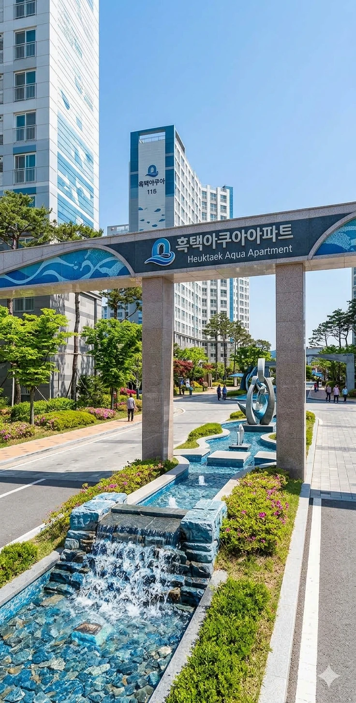 흑택아쿠아아파트 |
일반 시설/마커 | 효빈광역시 탄성군 흑택면 루비리 |
5. 여담
- 효빈시청과 효빈도시공사는 매년 "이 모든 것은 우연의 일치이며 지극히 평범한 자연 지명에서 유래한 것"이라는 해명 보도자료를 내고 있지만, 정작 분양 공고문 폰트 색상이 하늘색 계열이거나 바다를 배경으로 한 점 때문에 아무도 믿지 않는다.
- 단지 인근 대형 마트에서는 매년 겨울마다 "아쿠아 아파트 입주민 귤 1+1 특별 할인" 행사를 진행한다. 해양 도시의 특산물을 장려하기 위한 것이라고는 하나 묘하게 타겟팅이 확실하다.
- 본래 의도(수변 도시 프리미엄)와는 완전히 달라져 버렸지만, 결과적으로 효빈시 부동산 시장에서 '아쿠아' 브랜드의 입지는 압도적인 1위로 자리매김했다. 기적적인 우연이 만들어낸 최고의 노이즈 마케팅 사례로 꼽힌다.